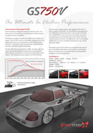

Over the last 100 years we have seen amazing advances in technology and business capabilities. Here at Greenstage (and now also at Greenstage Power) we think there is room for improvement. We are looking outside the square to prepare for the next 100 years and we will not be holding back.
Distributed renewable electricity combined with high efficiency electric transportation, it's our collective future and it's available right here, right now. Here are a couple of examples:
1) Greenstage Power provides web-based monitoring and control solutions that allow remote startup and shutdown of distributed solar generation as well as Zero-export systems which are used to protect the grid from potentially disruptive solar inverter peaks. If you have complex distributed energy requirements, we are here to help.
2) Greenstage's GS750V is a demonstration of Tumanako technology, it has the potential to be the fastest car in the NZSC series with torque and power curves that outshine the competition. It will be the cleanest, greenest and possibly quickest car on the track. Emitting zero harmful gases aside from the occasional bit of burnt rubber, this car will be like nothing else. Plant your foot and hold on!

Greenstage by Team Greenstage is licensed under a Creative Commons Attribution-Share Alike 3.0 Unported License.